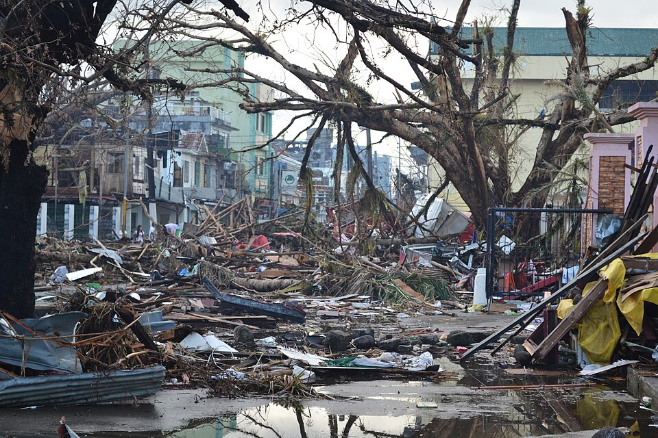
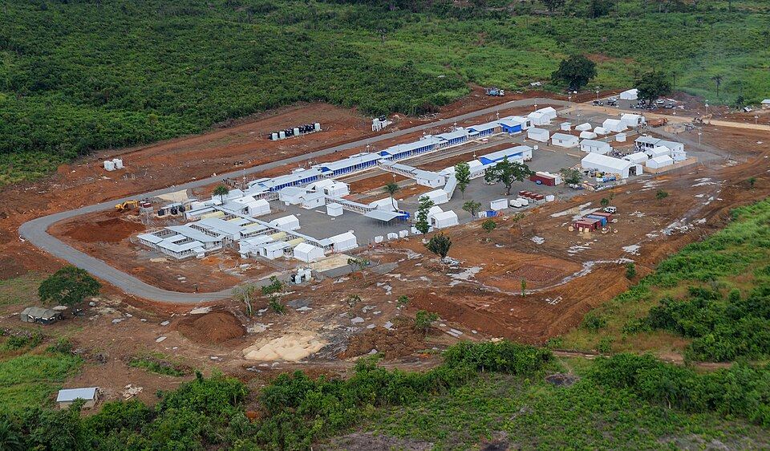
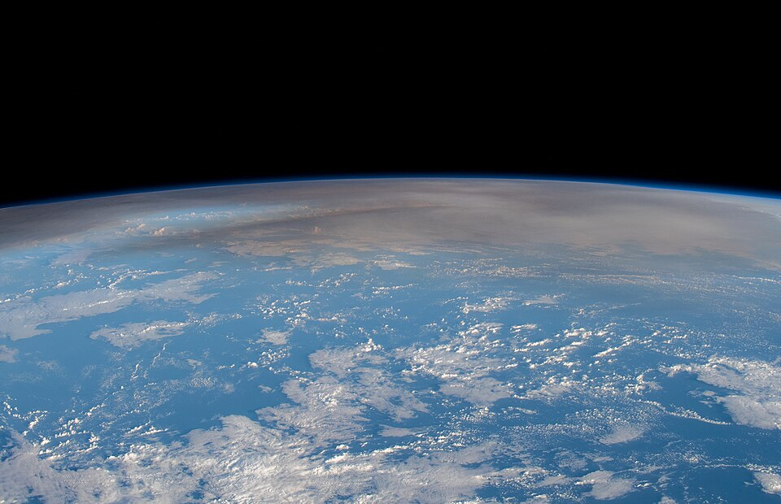
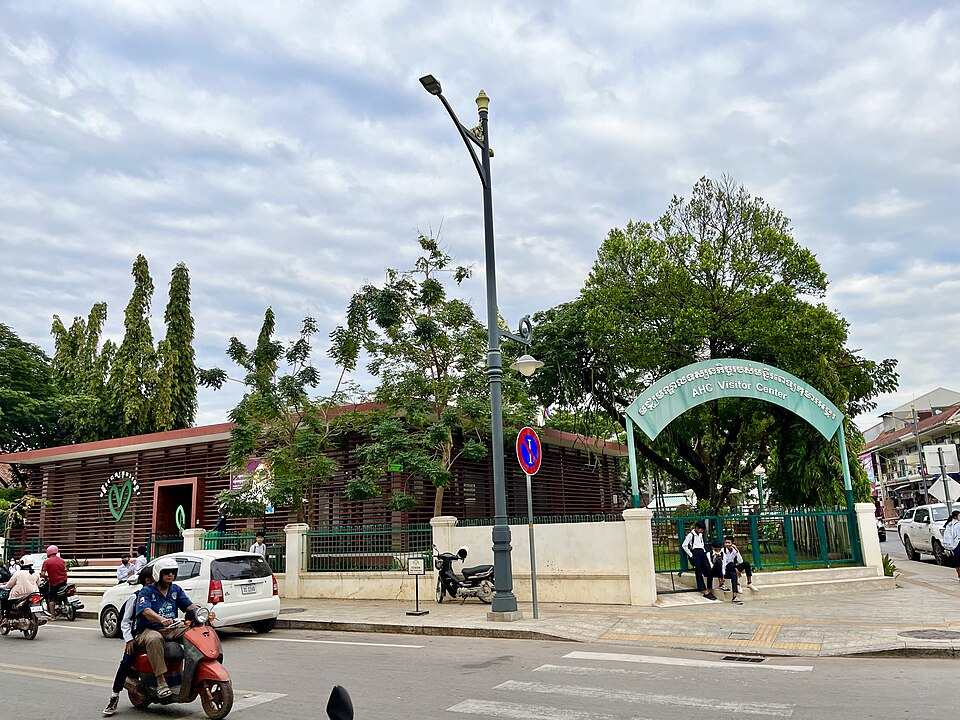
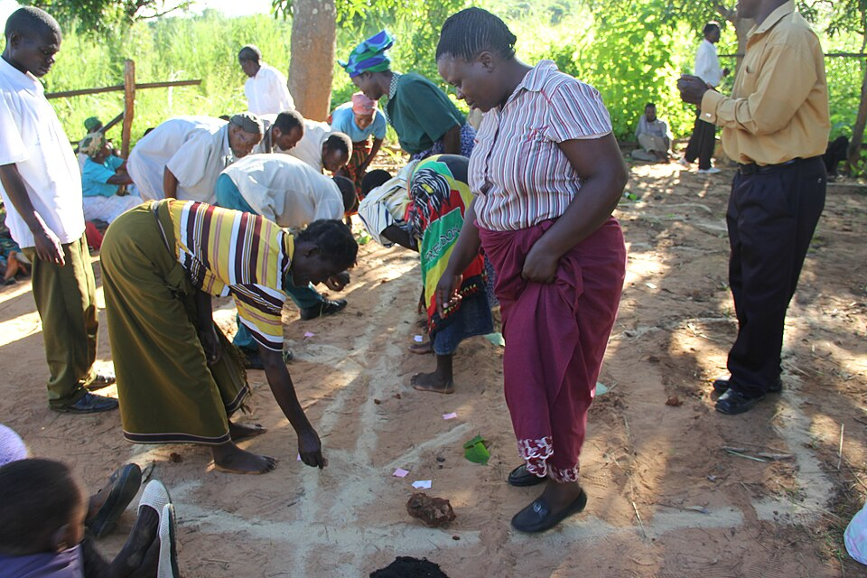
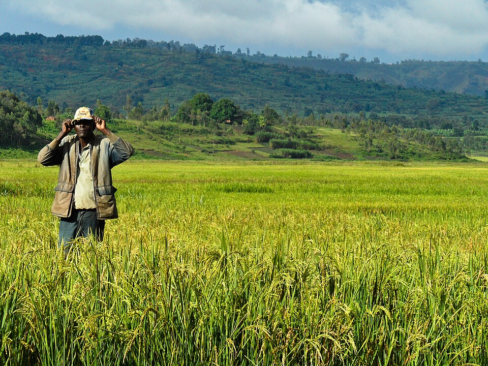

国际援助案例
-

彩虹围巾
夏飞和本杰明雨林寻亲
-

病房里的舞
妮可康复出院前的告别
-

她选择微创
萨劳特接受汤加首例妇科腹腔镜
-

担架接力
哈塔伊废墟里的联合营救
-

抬出废墟
加德满都四小时搜救
-

下机就集结
朱伟带队驰援莫桑比克
-

甲板上的班
刘兆强参与卸载援汤物资
-
在大巴过夜
中国救援队连夜赶赴曼德勒
-

画一颗心
萨塔拉的出院礼物
-

手术台上的手
九十七岁老人握住医生
-

一声谢谢
斐济患者用中文感谢医生
-

行李里的模型
孙爽带穴位模型援非
-

彼得的食指
高王军走进卡迪迪村义诊
-

夫妻接力
雷晓真和戴书明先后援突
-

她开始种菇
扎卡阿博里在戈罗卡试种
-

她教人种菇
伯瑟德从学员到培训者
-

第一笔菇钱
卡布卡布带姐妹种菌菇
-

饭碗到米厂
约翰在林格四村种出新生计
-

蜗牛喂鱼
安娜斯塔西娅学会省饲料
-

进球就拥抱
恩东戈在村里看非洲杯